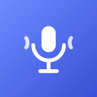

MR 송출기
⬇ VB-Cable
크롬 또는 엣지로 열어 주세요. 이 브라우저에서는 일부 기능이 동작하지 않아요.
송출 준비가 필요해요
오버워치로 보내려면 가상 마이크(VB-Cable)를 한 번 설치해 주세요.
오버워치로 보내려면 가상 마이크(VB-Cable)를 한 번 설치해 주세요.
설치 없이 쓰기 (스테레오 믹스)
Win+R → mmsys.cpl → [녹음] 탭 → 빈 곳 우클릭 "사용 안 함 장치 표시"
→ "스테레오 믹스" 우클릭 → 사용 → 이 창 새로고침(F5)
스테레오 믹스로 송출 중
오버워치 음성 입력을 스테레오 믹스로 바꾸세요. 헤드폰 소리가 그대로 나가서 내 목소리도 함께 들려요.
오버워치 음성 입력을 스테레오 믹스로 바꾸세요. 헤드폰 소리가 그대로 나가서 내 목소리도 함께 들려요.
헤드폰은 메인보드 단자(Realtek)에 꽂아야 해요. 게임·디스코드 소리도 같이 나가요.
준비 중…
MR
- 같은 브라우저에서 유튜브 MR을 열어 두기
- 버튼 → Chrome 탭에서 그 탭 선택
- 탭 오디오도 공유 체크 → 공유
0:00 / 0:00
소리
고음 보호크게 불러도 덜 깨지게 (지연 +6ms)
장치 설정
송출 방식
🎙 마이크
📡 송출 (보통 CABLE Input)
🎧 헤드폰
내 목소리 듣기헤드폰으로 내 목소리도 들려요
지연을 줄이려면 블루투스 대신 유선 헤드폰을 쓰고, 마이크와 헤드폰의 샘플레이트를 같게(예: 48000Hz) 맞추세요. 스피커를 쓰면 하울링이 날 수 있어요.
오버워치 설정
- 옵션 → 사운드 → 음성 채팅 입력 → CABLE Output (스테레오 믹스 모드면 스테레오 믹스)
- 그룹/팀 음성 채팅 → 항상 켜기
- 노래가 끝나면 입력을 원래 마이크로 되돌리기